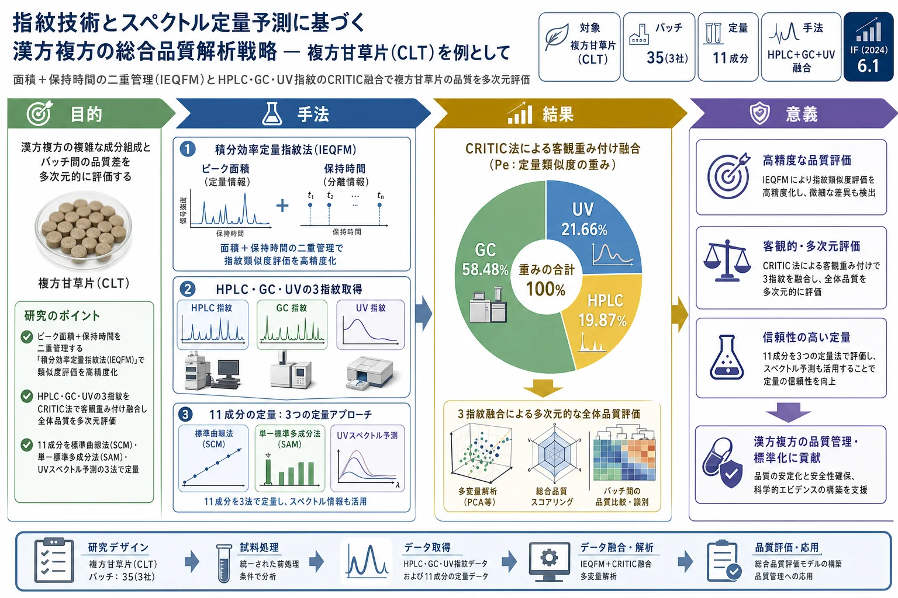

指紋技術とスペクトル定量予測に基づく漢方複方の総合品質解析戦略 — 複方甘草片(CLT)を例として

<!-- 方針: ほぼ全訳＋必要に応じた補足。原文構成に沿って訳出。「> 補足:」は訳者注。 -->
書誌情報
- 原題: Comprehensive analysis strategy of quality for traditional Chinese medicine compound based on fingerprint technology and quantitative prediction of spectra
- 著者: Ming Cai, Siqi Wang, Jiayi Jiang, Kai Gao, Guoxiang Sun（瀋陽薬科大学薬学院／広州粤華製薬, 中国）
- 掲載: Talanta 287 (2025) 127661. https://doi.org/10.1016/j.talanta.2025.127661
- インパクトファクター: 6.1（Talanta, JCR 2024 / Clarivate）
- 受理経過: 受領 2024-09-06 / 改訂 2025-01-18 / 採録 2025-01-26 / オンライン公開 2025-01-27
補足: CLT = 複方甘草片（compound liquorice tablets）。TCMC = 漢方複方。IEQFM = 積分効率定量指紋法。SAM = 単一標準多成分法(single-linear assay multi-markers)。CRITIC = 指標間相関による指標重要度法。CCM = 特徴連結法。Se=定性類似度、Pe=定量類似度。本論文は分析法開発（ケモメトリクス）の研究論文。
要旨（Abstract）
漢方複方(TCMC)は由来が広く化学組成が複雑で品質差を生じる。従来の指紋解析は品質評価・優劣判定に一定の限界がある。本研究では、類似度評価を最適化するため、ピーク面積と保持時間の二重管理を行う積分効率定量指紋法(IEQFM)を提案。例として 35バッチの複方甘草片(CLT) のHPLC・GC・UV指紋を評価した。オフライン波長切替法で多波長データ処理を簡略化。次に、CLT中の 11成分 を単一標準多成分法(SAM)と標準曲線法(SCM)で正確に定量。直交部分最小二乗判別分析(OPLS-DA)で品質差に寄与する特徴成分を抽出。UVスペクトルは特徴連結法(CCM)で前処理して量子指紋を得て、PLSRモデルで定量予測(p > 0.7)。最後に、CRITIC法で各評価法に重みを与えて3指紋を融合評価した。本研究はTCMCの品質解析に探索的手法を提供する。
1. 序論（Introduction）
TCMCは多様な生薬からなり化学組成が複雑で、品質評価は安全・有効な臨床応用の前提である。品質管理は単一成分評価から全体制御モードへ移行してきた。指紋構築は成分の同定・品質管理に有効で、国際的に認知された評価法である。指紋と多指標定量の組み合わせが最も一般的だが、複数標準品の使用はコスト・入手性・安定性の課題がある。SAM はこれを解決し、基準物質と被測定物質の比例関係から含量を正確に算出でき、検出コストを大きく削減する。
類似度解析では多くがピーク面積を主パラメータとし保持時間の影響を無視してきた。本研究は 面積と保持時間の双方 を用いるIEQFMを提案し、より正確な指紋評価を行う。多波長は単純融合/連結だと冗長情報を増幅するため、本研究はオフライン波長切替法で2波長の最大吸収を組み立てる。UVスペクトルでは類似物質の吸収が重なるため、連続スペクトルを量子ピークに変換するCCMを提案。さらに、複数手法の相互影響・重要度を判定せず単純平均する従来法の問題に対し、CRITIC法を初めて評価系に導入し、指標の変動性と指標間相関から各手法の重みを算出する。
CLTは咳・痰（特に呼吸器感染による）の臨床治療に用いられる代表的TCMC。中国薬局方ではCLTの品質規格は 甘草酸(GA)とモルヒネのみ で、揮発性成分は管理されていない。CLTの去痰効果は主に揮発性成分(特に樟脳とトランスアネトール)に依存するため、HPLC指紋のみでは不完全であり、GCを補って評価を完全・信頼できるものにすべきである。本研究は「指紋−含量予測−データマイニング」の品質管理解析法を開発した。
2. 材料と方法（Materials and Methods）
2.1 試料・試薬
3社・35バッチのCLT（S1〜S8=A社の期限切れ品、S9〜S23=B社、S24〜S35=C社）。標準品: リクイリチンアピオシド(LA, 98%)・リクイリチン(LQ, 98%)・リクイリチゲニン(LG, 98%)・イソリクイリチゲニン(ILG, 98%)・甘草酸(GA, 98%)・モルヒネ(MP, 99.1%)・リン酸コデイン(CP, 97.3%)・安息香酸ナトリウム(SB, 99.7%)・樟脳(CMP)・トランスアネトール(TA, 99.7%)・イソリクイリチンアピオシド(ILA, 98%)。内標準(IS)はフェンプロバメート。
2.2 HPLC条件
Agilent 1100、注入量 10 μL、検出波長 220 nm・260 nm（試料調製・分離条件は著者らの先行法に準拠）。
2.3 GC条件
CLT錠を粉砕し2錠を精秤、純水10 mLで超音波抽出10分、酢酸エチル10 mL添加・5分振盪、2000 rpm 5分遠心。上清3 mL＋IS溶液1 mLを 0.45 μm 濾過。
- 装置: Agilent 6890N GC-FID、HP-5キャピラリー(30 m × 0.32 mm × 0.25 μm)、キャリヤー窒素 定流量 1.03 mL/min
- 注入口・FID 220 ℃、空気300/水素40/窒素30 mL/min、プレカラム圧 5.6 psi
- 昇温: 80 ℃(5分保持)→2 ℃/min→90 ℃(5分)→20 ℃/min→200 ℃(2分)→30 ℃/min→220 ℃(22分)。スプリットレス 2 μL注入
2.4 UV条件
Agilent 1200にカラムの代わりに空のPEEK管(5000 mm × 0.12 mm)を装着しフローインジェクション。CLT粉末 約0.013 g を、0.5%リン酸含有80%メタノール 25 mL で超音波抽出10分。溶離は60%メタノール、注入5 μL・流速 0.5 mL/min、190–400 nm を1.2分で全波長スキャン。
2.5 理論
- IEQFM: 試料指紋ベクトル X=(A₁/t_S1, …)、標準指紋ベクトル Y=(A₁/t_R1, …)（A=ピーク面積、t=保持時間）。SF=X・Yのコサイン。定性類似度Se(式2)・定量類似度Pe(式3)で評価。8段階のグレード判定: G1(Se≥0.95, 95≤Pe<105%)／G2(Se≥0.90, 90≤Pe<110%)／G3(Se≥0.85, 85≤Pe<115%)／G4(Se≥0.80, 80≤Pe<120%)／G5(Se≥0.70, 70≤Pe<130%)／G6(Se≥0.60, 60≤Pe<140%)／G7(Se≥0.50, 50≤Pe<150%)／G8(Se<0.50, Pe<50% or ≥150%)。
- SAM: 基準成分と相対補正係数(fsi)から他成分を定量。
- CCM: 連続スペクトルを量子ピーク化。
- CRITIC: 標準偏差(変動性)と相関係数から客観重みを算出。
解析ソフト: Unscrambler X 10.4（PLSR）、Simca 14.1（OPLS-DA）。
3. 結果と考察（Results and Discussion）
3.1 定量分析（11成分）
220 nm クロマトグラム・UVで9成分、GCで樟脳(CMP)・トランスアネトール(TA)を保持時間で同定。11成分のピーク面積RSDは < 3.0%（精度・再現性・安定性良好）。検量線・直線範囲・LOD・LOQをTable 1に、回収率も適合。SCMによる含量(mg/錠)の順は——
GA > SB > CMP > LA > TA > LQ > ILA > MP > LG > ILG > CP
CMPとTAは揮発性のため含量変動が大きく、ILA・LG・ILGは安定（製造者差を受けにくい）。3社平均では A社は全体に含量が低く、B・C社は高い。GAは3社とも薬局方規格に適合。モルヒネはB・C社は適合だが、A社は 0.33 mg/錠（期限切れ品のため規格未達の可能性）。
SAM定量
GCでは2成分のみのためSAMはHPLCに適用。LQを基準物質とし、他8成分の相対補正係数(fsi)を算出。各成分の計算信頼度(Re)は > 95.5%。SCMとSAMの相関はPearson r > 0.9 で、SAMがSCMの代替として正確な結果を与え、多成分同時定量のコストを削減できることを示した。
3.2 HPLC指紋解析
機器精度・方法再現性・溶液安定性を検証（ピーク面積・保持時間のRSD < 3.00%）。220 nm(Fig.2A)・260 nm(Fig.2B)で指紋取得。S9–S35(適格試料)平均を参照指紋(RFP)とし、IEQFMで評価:
- 220 nm: Se 0.935–0.995、Pe 72.8–112.9%
- 260 nm: Se 0.900–0.993、Pe 51.7–126.2%（260 nmはTA(ピーク26)の応答が大きく揮発性で不安定なため変動大）
Seの変動は小さく(各バッチで化学組成が類似)、Peの変動が大きい(含量差)。A社はPeが低くグレードが高い（＝RFPより全体品質が低い）、B・C社は良好。
オフライン波長切替指紋(OSF)
220 nmと260 nmの単純連結(TF)ではクロマトグラムが冗長になる。220 nmは32分前に、260 nmは32分後に主要ピークがあるため、32分でオフライン波長切替した新指紋(OSF)を作成。Pe 69.0–114.0% で260 nm単独より変動が縮小し、両波長の有用情報を保持。
3.3 GC指紋解析
昇温条件を最適化（情報量Iが大きい条件を採用）。35バッチのGC指紋を取得し、CMP・TAの含量変動を評価。Peが揮発性成分の含量変化を一定程度反映。
3.5 OPLS-DA
220–260 nm OSFの32ピーク＋GCの5ピーク＝35×37行列を構築。信頼区間外のS21–23を除外後、R²X=0.849、R²Y=0.975、Q²=0.966（安定・信頼）。適格試料(QS)と期限切れ試料(ES)を正確に判別。VIP>1 かつ P<0.05 で 7つの有意成分 を抽出: HPLC28(GA)・HPLC16(SB)・GC3(TA)・HPLC2・HPLC21(LG)・HPLC14(LQ)・HPLC29。うち GAのVIPが最高で、品質変動の主要因と示された。
3.6 UV解析
生UVスペクトルは 198 nm(最大、芳香環のπ-π)、230/270 nm(ショルダー)、246 nm、370 nm(共役基のn-π)に吸収。前処理としてSG平滑化・SNV・2次微分・CCM を比較し、CCMがR²最良・RMSEC/RMSEP最小。CCMで30点間隔・特徴ピーク10とし、各バッチ 50量子ピーク を取得。UV量子指紋をIEQFM評価すると Se > 0.99、Pe 79.4–119.7%（グレード1〜5に分布）。UVはHPLCの多波長情報不足・GCの非揮発性成分欠如を補完。
UVスペクトル定量予測
CCM処理量子指紋(50量子ピーク)を独立変数、含量を従属変数としてPLSRを構築。Kennard-Stone法で訓練80%・検証20%に分割。樟脳を除き 量子指紋はRMSE低下・R²上昇（生スペクトルより良好）。予測値とSCM実測値の相関は r > 0.8、11成分のt検定 p > 0.7（両法に有意差なし）。ただしUV予測の精度はSCM/SAMには及ばず、現状は予備スクリーニング向き。
補足: 3定量法の使い分け——SCM=標準品があり対象成分が明確な場面(高精度、製剤開発等)、SAM=多成分系で一部標準品が無い複雑系(TCM・天然物)、UV予測=迅速・非破壊で大規模スクリーニング向き(精度はSCM/SAM未満)。
3.7 3指紋のCRITIC融合
HPLC・GC・UVで評価結果に差（例: S11はHPLCでG3、GCでG5、UVでG1）。これは原理の違い（HPLC=不揮発・熱不安定成分、GC=揮発性、UV=不飽和結合の構造特性）による。CRITIC法で指標の変動性・対立から客観重みを算出:
- Se の重み: HPLC 43.81%／GC 55.48%／UV 0.91%
- Pe の重み: HPLC 19.87%／GC 58.48%／UV 21.66%（GCが最も影響大）
融合後の Sf 0.931–0.994、Pf 78.0–139.4%（6グレードに分布）。単純平均だとS24がSf 0.973・Pf 96.0%でグレード1(偽陽性)になるところ、CRITIC融合では Sf 0.961・Pf 83.4% でグレード4となり真の品質に近い。CRITIC融合により同一手法内の変動と手法間の相互影響の双方を反映し、TCMCの多次元的品質制御を実現できる。
4. 結論（Conclusion）
「指紋−含量予測−データマイニング」の品質管理解析法を確立した。面積と保持時間を二重管理するIEQFMで類似度評価を高精度化し、SAMで多成分を低コスト定量、CCM＋PLSRでUVスペクトルから含量予測、OPLS-DAで品質差の特徴成分(GA等)を抽出、CRITIC法でHPLC・GC・UVの3指紋を客観重み付け融合した。単一手法の限界を補い、CLTの品質評価をより正確・信頼できるものにする探索的手法である。
補足（実務的示唆）: 薬局方が甘草酸とモルヒネのみを規定する現行規格に対し、本研究は「揮発性成分(GC)・不揮発性成分(HPLC)・全体構造(UV)を別原理で捉え、客観重みで融合する」枠組みを示す。実務的には、HPLC指紋＋SAMで標準品コストを抑えつつ多成分を押さえ、GCで去痰に効く揮発性成分(樟脳・トランスアネトール)を必ず併せて管理することが、CLTの品質一貫性評価の要点となる。期限切れ品(A社)が一部指標で良く見える例は、単一指標・単一原理評価の危うさを示し、多次元融合の意義を裏づける。